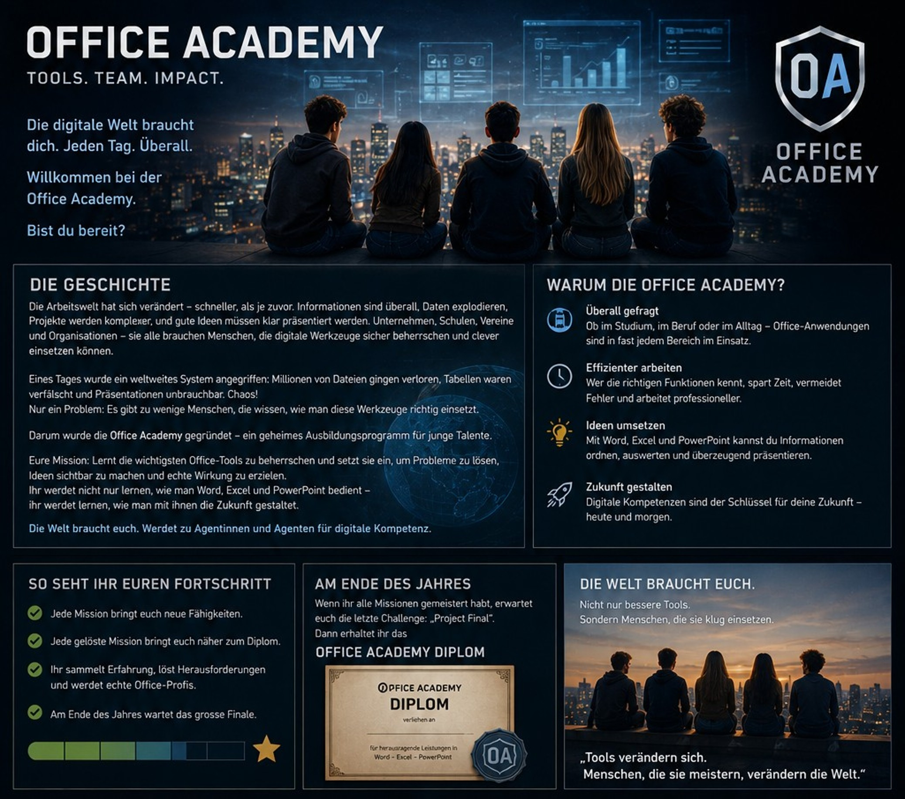

Office Academy
Tools. Team. Impact. · Wahlfach Informatik · 2. Oberstufe
Die digitale Welt braucht dich. Jeden Tag. Überall. Willkommen bei der Office Academy!
Die Geschichte
Informationen sind überall, Projekte werden komplexer und gute Ideen müssen klar präsentiert werden. Schulen, Unternehmen und Vereine brauchen Menschen, die digitale Werkzeuge sicher beherrschen und clever einsetzen.
In der Geschichte der Office Academy wurde ein weltweites System angegriffen: Daten gingen verloren, Tabellen wurden verfälscht und Präsentationen unbrauchbar. Um solche Herausforderungen zu lösen, wurde die Office Academy gegründet – ein Ausbildungsprogramm für junge Talente.
Euer Auftrag: Lernt Word, Excel und PowerPoint zu beherrschen. Ordnet Informationen, löst Probleme und macht eure Ideen sichtbar.
Warum Office Academy?
- Überall gefragt: Digitale Werkzeuge begleiten euch in der Schule, im Beruf und im Alltag.
- Effizienter arbeiten: Passende Funktionen sparen Zeit und helfen, Fehler zu vermeiden.
- Ideen umsetzen: Mit Word, Excel und PowerPoint könnt ihr Informationen gestalten, auswerten und überzeugend präsentieren.
- Zukunft gestalten: Ihr entscheidet, wie ihr eure digitalen Fähigkeiten sinnvoll einsetzt.
Fortschritt und Abschluss
Jeder gelöste Auftrag bringt neue Fähigkeiten und Erfahrung. Ihr löst Herausforderungen und entwickelt euch zu Office-Profis.
Am Ende des Jahres wartet die Abschluss-Challenge «Project Final». Wenn ihr alle Missionen gemeistert habt, erhaltet ihr das Office Academy Diplom.
«Tools verändern sich. Menschen, die sie meistern, verändern die Welt.»
Einstiegsplakat
Office Academy · Überblick
